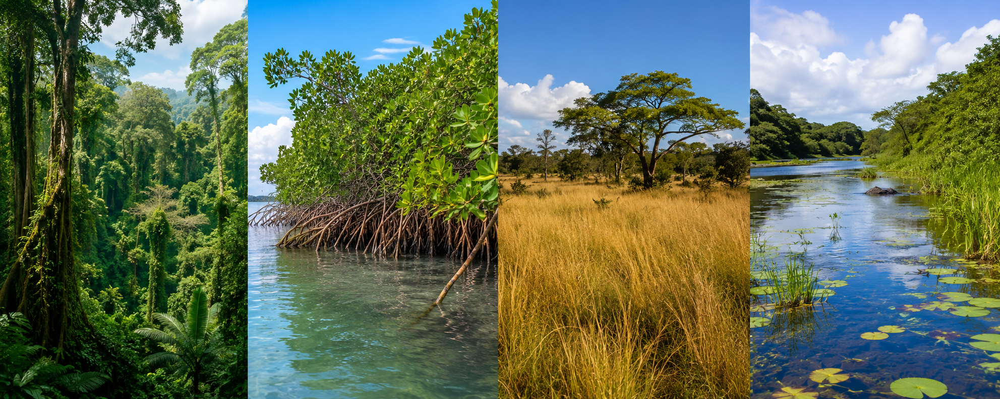
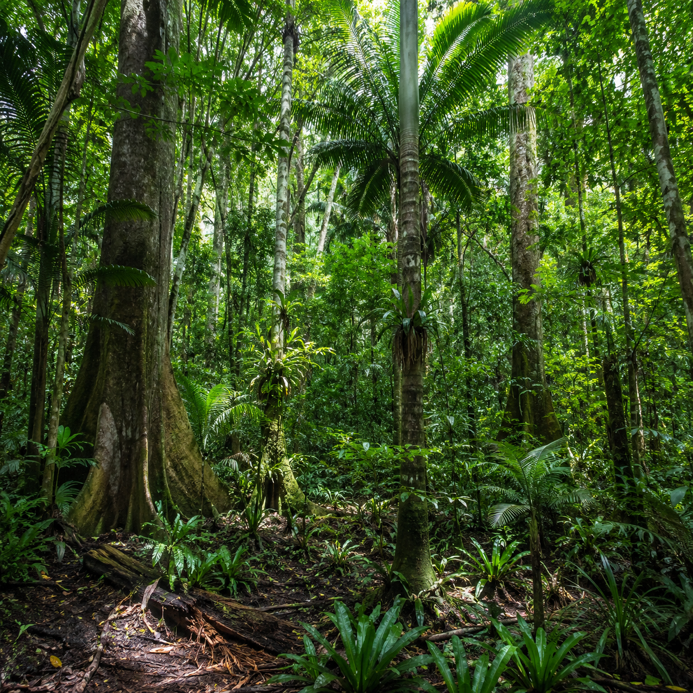
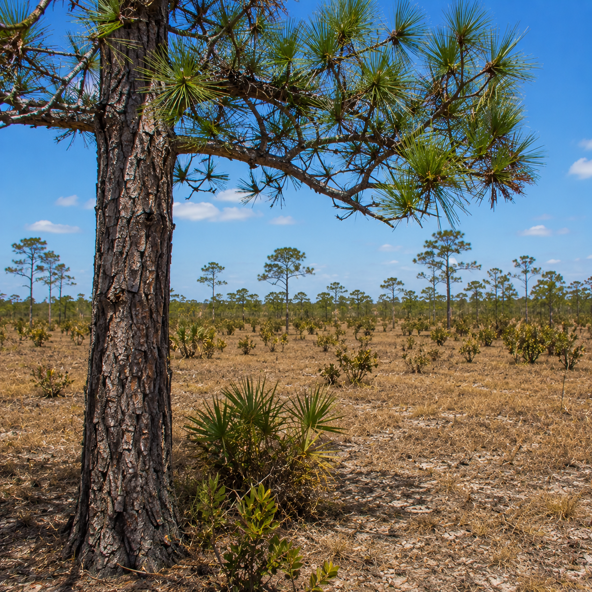
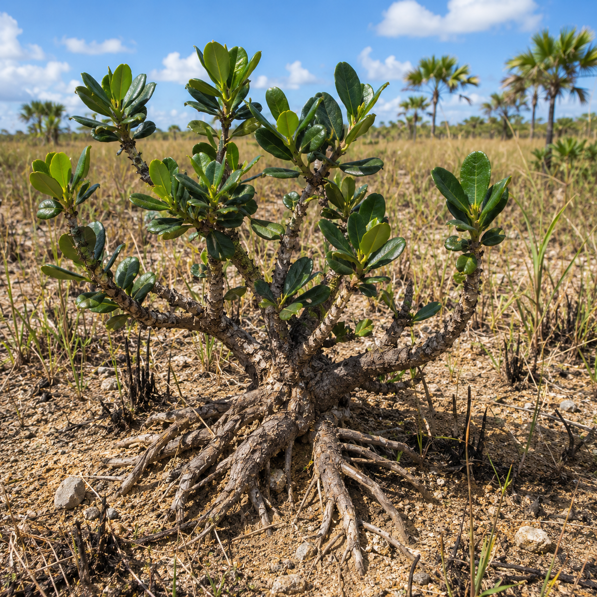
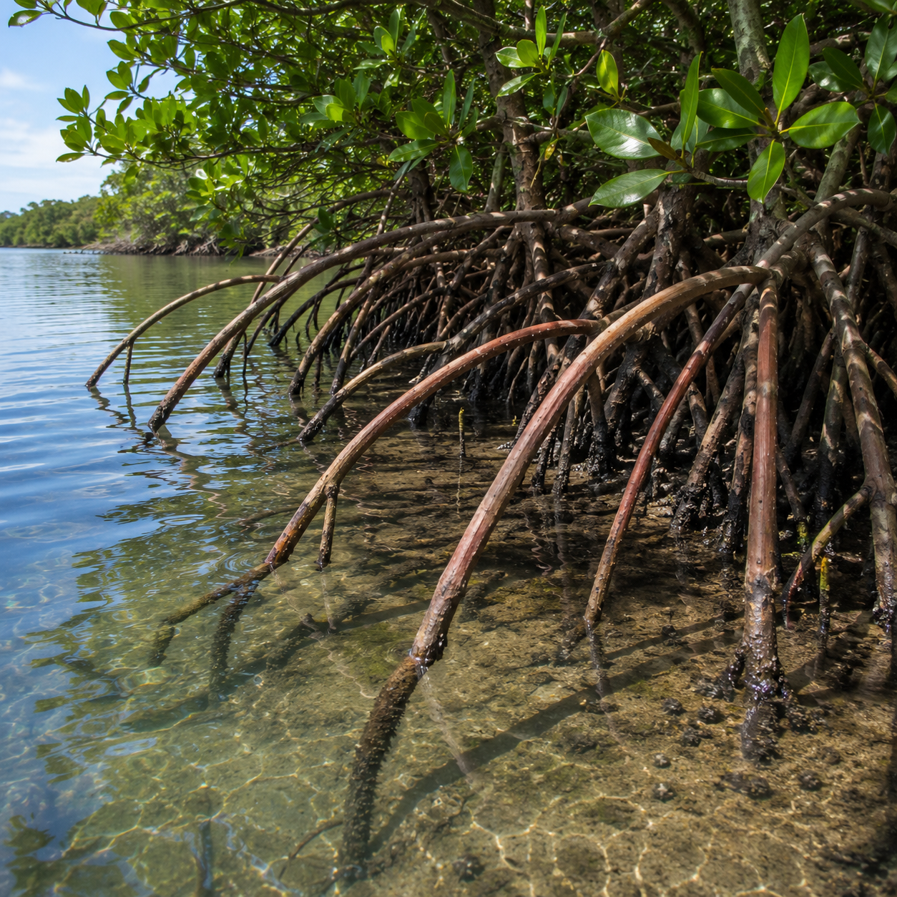
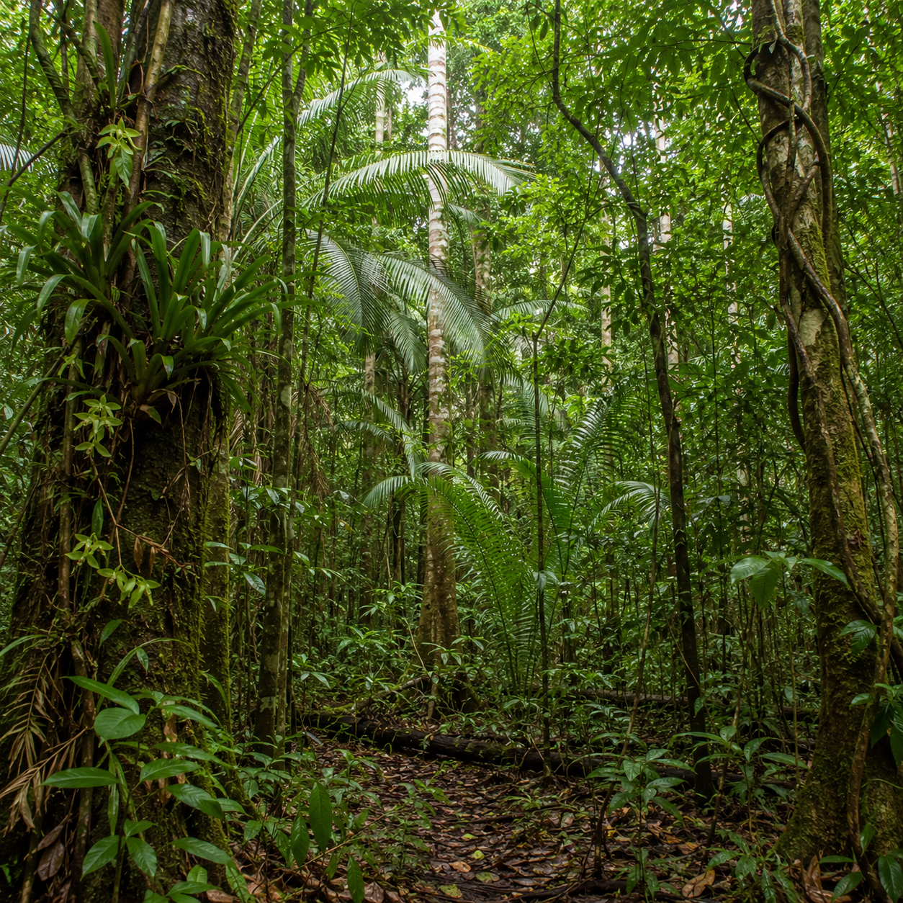
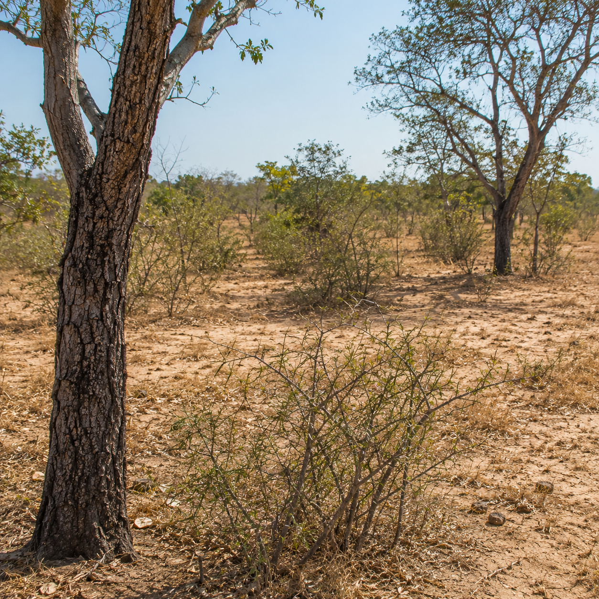

Standard 6 · Science · SC 6.20
🌿 Plant Diversity in Belize
Read each question carefully — choose the best answer · 35 minutes · 30 points
Test Already Submitted
You have already completed this test. Your results are saved below. Download your PDF report or go back to Science.
Teacher Access

📗 Section A — Multiple Choice
12 points · 3 pts each
Circle the letter of the best answer for each question.
1.What is biodiversity?3 pts
2.Which of the following is an abiotic factor in an ecosystem?3 pts
3.Look at the two ecosystem images below. Which ecosystem in Belize generally receives the greatest amount of annual rainfall?3 pts

Ecosystem A

Ecosystem B
4.A student finds the plant shown below — it has thick, waxy leaves and deep roots that store water during dry seasons. In which Belizean ecosystem is it MOST LIKELY found?3 pts

📘 Section B — Short Response
12 points · 4 pts each
Answer each question in 2–3 complete sentences using correct scientific vocabulary.
5.Explain how the amount of rainfall affects plant diversity in an ecosystem. (4 pts)4 pts
6.Look at the image below, then explain why mangrove plants are able to survive near saltwater environments in Belize.4 pts

7.State ONE difference between the rainforest ecosystem and the savanna ecosystem in Belize.4 pts
📙 Section C — Application
6 points
Read the scenario carefully, then answer both questions in complete sentences.
📖 Read the Scenario
Maria is a young scientist studying two patches of land in Belize. Patch A is located in the Chiquibul Forest Reserve in the Cayo District. It receives over 2,000 mm of rainfall per year, has rich, moist soil, and is shaded by a dense canopy of trees. She observes orchids, bromeliads, cohune palms, and climbing vines.Patch B is located near the Belize River Valley. It receives less than 800 mm of rainfall per year, has dry, sandy soil, and experiences strong dry seasons. She observes dry grasses, small thorny shrubs, and widely spaced trees with thick bark.

Patch A — Chiquibul Forest Reserve

Patch B — Belize River Valley
C1.Identify TWO abiotic factors from the scenario that are affecting plant life. Explain how each factor influences which plants can survive in each patch.3 pts
C2.Which patch — A or B — is more likely to have greater plant biodiversity? Choose one, then justify your answer using evidence from the scenario.3 pts
"The patch with greater biodiversity is
because
"
Answer all 10 questions to submit
🏆 Your Results
Sections A–B
—
out of 24
Section C
—
out of 6
Total Score
—
out of 30
Percentage
—
Performance—%
Submit your test to see results!